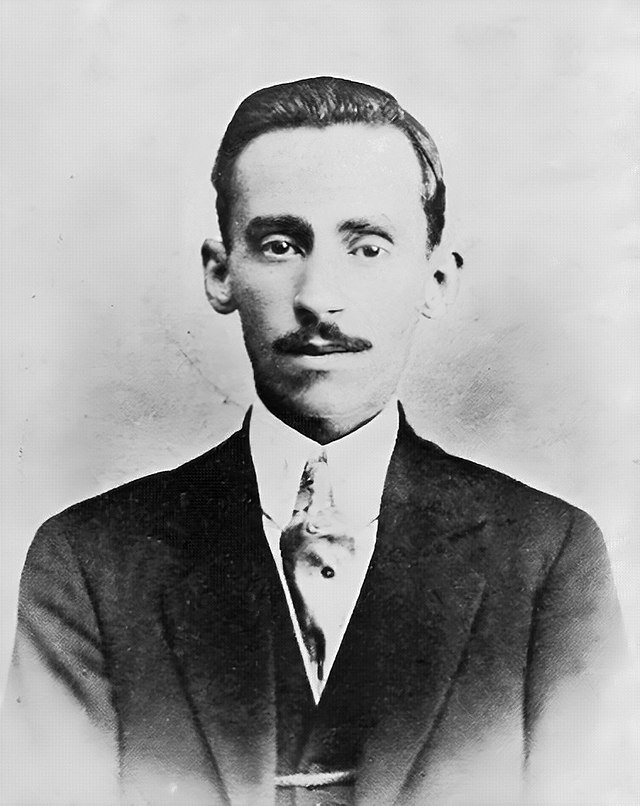

Augusto dos Anjos

Augusto dos Anjos é considerado um dos poetas mais intrigantes da poesia brasileira. Sua poesia, que se filia ao pré-modernismo, expressa a angústia e a morbidez do homem que se vê incapaz de enfrentar o destino certo a todos os seres vivos: a morte. Influenciado pelo simbolismo e pelo parnasianismo, além das correntes científicas em voga no início do século XX, Augusto dos Anjos condensou numa única obra poética, intitulada Eu, uma série de poemas altamente pessimistas, sendo um desses a obra "Eu e Outras Poesias".